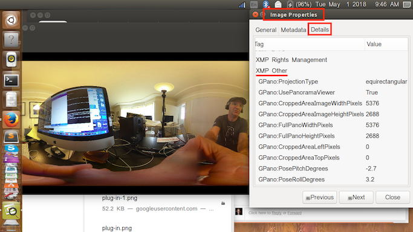
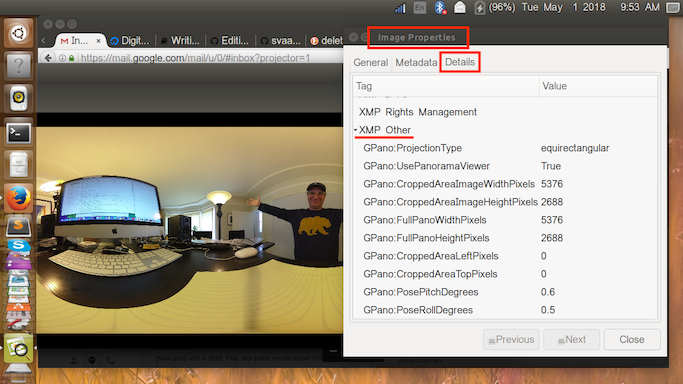
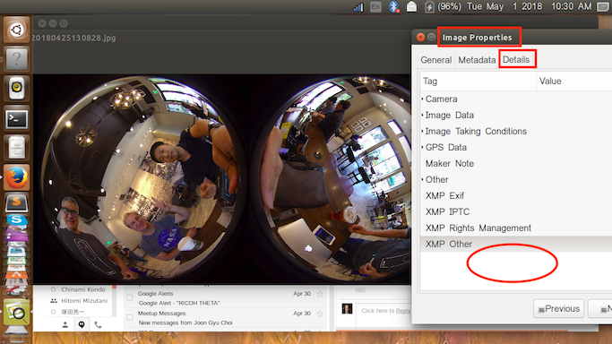

Custom Development Tips
There is extensive documentation on the RICOH Developer Connection THETA Plug-in portal
The plug-in SDK is a great place to get started. The SDK can be downloaded from GitHub. If you have any problems please send an email to jcasman@oppkey.com for friendly (I hope) help. :-)
<<<<<<< HEAD
Basic Use of Buttons
There are 2 points to remember in using buttons:
- Button types
- Button operation types
Button Types
Below are button types. Let’s confirm the key code constant which corresponds to them.
| Number | Button | Keycode |
|---|---|---|
| 4 | Shutter Button | KeyReceiver.KEYCODE_CAMERA |
| 12 | Wi-Fi Button | KeyReceiver.KEYCODE_WLAN_ON_OFF |
| 13 | Mode Button | KeyReceiver.KEYCODE_MEDIA_RECORD |

Button Operation Types
For button operation, the following callback functions are available:
| Button Operation | Callback Function |
|---|---|
| Press button | onKeyDown |
| Release button | onKeyUp |
| Long press of Mode Button | onKeyLongPress |
How to Use Buttons
The concept is you are going to combine button information introduced in the Basics of Buttons section and button operation types.
When using the SDK, MainActivity is the first to be called, but this section focuses on buttons.
@Override
protected void onCreate(Bundle savedInstanceState) {
super.onCreate(savedInstanceState);
onCreate will be called up at the very beginning just once, when MainActivity is run.
@Override
public void onKeyDown(int keyCode, KeyEvent event) {
if (keyCode == KeyReceiver.KEYCODE_CAMERA) {
/*
* To take a static picture, use the takePicture method.
* You can receive a fileUrl of the static picture in the callback.
*/
new TakePictureTask(mTakePictureTaskCallback).execute();
}
}
onKeyDown will be run when the button is pushed. In the middle, it’s spilt so that if the KEYCODE_CAMERA button is pressed, when the shutter button is pressed new TakePictureTask will be run.
@Override
public void onKeyUp(int keyCode, KeyEvent event) {
/**
* You can control the LED of the camera.
* It is possible to change the way of lighting, the cycle of blinking, the color of light emission.
* Light emitting color can be changed only LED3.
*/
notificationLedBlink(LedTarget.LED3, LedColor.BLUE, 1000);
}
@Override
public void onKeyLongPress(int keyCode, KeyEvent event) {
notificationError("");
}
Similarly, onKeyUp is run when the button is released, and onKeyLongPress is run when the button is pushed for a long time. Unlike onKeyDown where there is a choice, pressing any button will run it.
Basic Use of LEDs
When working with LEDs, there are 3 main points to remember:
- 3 types of control—On, Off, Flashing
- Can control LED3 through LED8 for the below list
- LED3's LED color can be changed
| No. | LED | LED No |
|---|---|---|
| 6 | Wi-Fi LED | LED3 |
| 7 | Shooting Mode LED | (Camera)LED4, (Video)LED5, (Live)LED6 |
| 8 | Video Recording LED | LED7 |
| 9 | Memory Warning LED | LED8 |
Working with the SKD...
In pluginlibrary, the functions below are available for controlling LEDs.
Specify a color and switch LED3 on.
public void notificationLed3Show(@NonNull LedColor ledColor)
Select LED3 through LED8 and switch the LED on.
public void notificationLedShow(@NonNull LedTarget ledTarget)
Flash the LED
public void notificationLedBlink(@NonNull LedTarget ledTarget, LedColor ledColor, int period)
Turn the LED off
public void notificationLedHide(@NonNull LedTarget ledTarget)
-
LedTarget- Withenum, select one from LED3, LED4, ..., LED8 -
LedColor- Withenum, select one from RED, GREEN, BLUE, CYAN, MAGENTA, YELLOW, WHITE. Default is BLUE. -
period- When using flash control, 1 cycle period (ms) is set between 250-2000. A number below 250 will be set at 250, and a number above 2000 will be set at 2000.
Creating a Plug-in to Change the Colors of the Wireless LED
Here is an example of a plug-in that changes the wireless LED colors randomly and stops when the shutter button is pressed. It was created by RICOH's @meronpan. This video shows the results.
The 2 changes below will be added.
MainActivity- AndroidManifest.xml
Changing MainActivity
MainActivity was changed as shown below.
package com.theta360.pluginapplication;
import android.os.Bundle;
import android.view.KeyEvent;
import com.theta360.pluginapplication.task.TakePictureTask;
import com.theta360.pluginapplication.task.TakePictureTask.Callback;
import com.theta360.pluginlibrary.activity.PluginActivity;
import com.theta360.pluginlibrary.callback.KeyCallback;
import com.theta360.pluginlibrary.receiver.KeyReceiver;
import com.theta360.pluginlibrary.values.LedColor;
import com.theta360.pluginlibrary.values.LedTarget;
import java.util.Random;
import java.util.Timer;
import java.util.TimerTask;
public class MainActivity extends PluginActivity {
//define schedule time interval
private static final int TIMER_INTERVAL_PERIOD = 250;
@Override
protected void onCreate(Bundle savedInstanceState) {
super.onCreate(savedInstanceState);
setContentView(R.layout.activity_main);
//set timer so LED color will renew at certain time interval
Timer timer = new Timer();
Random ledColorRand = new Random();
Random ledTargetRand = new Random();
Random ledHideRand = new Random();
//set run to perform every 250ms
timer.schedule(new TimerTask() {
@Override
public void run() {
//select LED color randomly
int ledColorNum = ledColorRand.nextInt(LedColor.values().length);
//select turning on LED randomly
int ledTargetNum = ledTargetRand.nextInt(LedTarget.values().length);
//select turning off LED randomly
int ledHideNum = ledHideRand.nextInt(LedTarget.values().length);
//turn on LED3 with randomly selected color
notificationLed3Show(LedColor.values()[ledColorNum]);
//turn on randomly selected LED
notificationLedShow(LedTarget.values()[ledTargetNum]);
//turn off randomly selected LED
notificationLedHide(LedTarget.values()[ledHideNum]);
}
}, 0, TIMER_INTERVAL_PERIOD);
// Set a callback when a button operation event is acquired.
setKeyCallback(new KeyCallback() {
@Override
public void onKeyDown(int keyCode, KeyEvent event) {
if (keyCode == KeyReceiver.KEYCODE_CAMERA) {
//by ending Timer, end randomly flashing color with certain interval
timer.cancel();
//turn off LED
notificationLedHide(LedTarget.LED3);
notificationLedHide(LedTarget.LED4);
notificationLedHide(LedTarget.LED5);
notificationLedHide(LedTarget.LED6);
notificationLedHide(LedTarget.LED7);
notificationLedHide(LedTarget.LED8);
}
}
@Override
public void onKeyUp(int keyCode, KeyEvent event) {
}
@Override
public void onKeyLongPress(int keyCode, KeyEvent event) {
//by ending Timer, end randomly flashing color with certain interval
timer.cancel();
//turn off LED
notificationLedHide(LedTarget.LED3);
notificationLedHide(LedTarget.LED4);
notificationLedHide(LedTarget.LED5);
notificationLedHide(LedTarget.LED6);
notificationLedHide(LedTarget.LED7);
notificationLedHide(LedTarget.LED8);
//notification that plug-in has ended correctly
notificationSuccess();
}
});
}
}
Looking at the details…
//set run to perform every 250ms
timer.schedule(new TimerTask() {
@Override
public void run() {
//select LED color randomly
int ledColorNum = ledColorRand.nextInt(LedColor.values().length);
//select turning on LED randomly
int ledTargetNum = ledTargetRand.nextInt(LedTarget.values().length);
//select turning off LED randomly
int ledHideNum = ledHideRand.nextInt(LedTarget.values().length);
//turn on LED3 with randomly selected color
notificationLed3Show(LedColor.values()[ledColorNum]);
//select turning on LED randomly
notificationLedShow(LedTarget.values()[ledTargetNum]);
//select turning off LED randomly
notificationLedHide(LedTarget.values()[ledHideNum]);
}
}, 0, TIMER_INTERVAL_PERIOD);
timer.schedule will be called only once after running, because it was placed within onCreate. However, the run inside of onCreate will be called up periodically. With timer.schedule, run will be performed every 250ms.
@Override
public void onKeyDown(int keyCode, KeyEvent event) {
if (keyCode == KeyReceiver.KEYCODE_CAMERA) {
//by ending Timer, end randomly flashing color with certain interval
timer.cancel();
//turn off LED
notificationLedHide(LedTarget.LED3);
notificationLedHide(LedTarget.LED4);
notificationLedHide(LedTarget.LED5);
notificationLedHide(LedTarget.LED6);
notificationLedHide(LedTarget.LED7);
notificationLedHide(LedTarget.LED8);
}
}
Originally, the code to take pictures with the camera was placed inside onKeyDown, but that part was rewritten to deal with turning off the LED. run, which had been periodically running with timer.cancel, is stopped. After that, updating the LED ends.
The last step is to turn the LED off by notificationLedHide.
@Override
public void onKeyLongPress(int keyCode, KeyEvent event) {
//by ending Timer, end randomly flashing color with certain interval
timer.cancel();
//turn LED off
notificationLedHide(LedTarget.LED3);
notificationLedHide(LedTarget.LED4);
notificationLedHide(LedTarget.LED5);
notificationLedHide(LedTarget.LED6);
notificationLedHide(LedTarget.LED7);
notificationLedHide(LedTarget.LED8);
//notification that plug-in has ended correctly
notificationSuccess();
}
onKeyLongPress is called up when the Mode Button is pressed for a long time.
Inside of onKeyLongPress, the process of ending the plug-in is performed.
timer.cancel and notificationLedHide have the same processing purpose as onKeyDown.
Finally, notificationSuccess is run to notify that the plug-in has ended correctly.
Changing AndroidManifest.xml
Because the THETA has no screen, the following change was made.
AndroidManifest.xml
<activity android:name=".MainActivity"
android:screenOrientation="portrait"
>
<intent-filter>
<action android:name="android.intent.action.MAIN" />
<category android:name="android.intent.category.LAUNCHER" />
</intent-filter>
</activity>
In order to set the screen orientation, android:screenOrientation=“portrait” was added.
Without this code, when the THETA is tilted, it would be recognized that the screen has turned and onCreate would be run. As long as Android is running, when the screen is turned, the app is initialized.
Internal Storage
=======
Problems Importing pluginlibrary into New Projects
This was originally published on GitHub issues.
Some people have encountered problems with importimg the pluginlibrary into a new project. If you import the library by selecting "File"-"New"-"Import Module..." in Android Studio 3.1.3, the folder may not show up in Android Studio. StackOverflow has a tip about this problem.
- Import "pluginlibrary" in the SDK by selecting "File"-"New"-"Import Module..."
- Add a text "include ':app', ':pluginlibrary'" in "settings.gradle" file
- Sync by selecting "File"-"Sync Project with Gradle Files".
You should now be able to import the pluginlibrary into your project.
Internal Storage
8571d2749aa5200c1ff2d3be0a4bd67a0f02b2db The THETA V has a maximum storage size of 32GB. Developers can use 19GB for storage of their plug-in applications and approximately 1.5GB for the plug-in itself. The partition for data is
/data.
/sdcard/DCIM/ can be used.
This is an example of saving all your images to a sub-directory Construction and then
adding a number to the file name. There's a separate bit of code to iterate the roomNumber.
String fileUrl = "/storage/emulated/0/DCIM/Construction/room" + roomNumberStr + "sect01.jpg";
Text to Speech Status
As of May 21, 2018, android.speech.tts does not work. This may
start working in a future update. For now, you can try other Text-Speech engines
for Android. A list of untested engines is here. Another untested possibility
could be the Flite TTS Engine for Android.
Currently, human speech can be played directly from the internal speaker of the THETA V. However, the volume is low. We are trying to figure out how to increase the volume.
Here's a test of the THETA V playing "I Have a Dream" by Dr. Martin Luther King Jr.
AudioManager
This information is originally from GitHub Issues.
The "RicMicSelect" and "RicMicSurrondVolumeLevel" in Camera API are the settings for [AudioManager](https://developer.android.com/reference/android/media/AudioManager_.
This is an example of using 4ch B-format recording.
mAudioManager.setParameters("RicUseBFormat=true");
mAudioManager.setParameters("RicMicSelect=RicMicSelectAuto");
mAudioManager
.setParameters("RicMicSurroundVolumeLevel=RicMicSurroundVolumeLevelNormal");
Here, there is a setting "RicUseBFormat" for enabling 4ch B-format output. Because Android supports only mono (1ch) or stereo (2ch), use "RicUseBFormat=false" if you use normal audio features defined in Android.
XMP Data
[UPDATED May 1, 2018] Images produced by the Plugin Application have XMP data in them. These screenshots are just looking at image properties using the GNOME Image Viewer app on an Ubuntu laptop.
Here is an image taken with the Plugin Application, showing ProjectionType and more:

In comparison, here is an normal image taken at my desk, using the RICOH THETA V as a camera, not in Plug-in Mode.

However, I have access to an example of a dual fish-eye image taken with a plug-in built by a developer that does not include XMP data. This may indicate that as you develop your plug-in, you may need to inject XMP data. There's an uncomfirmed rumor that Ricoh is working on a library to help with this.
Here's the example:
